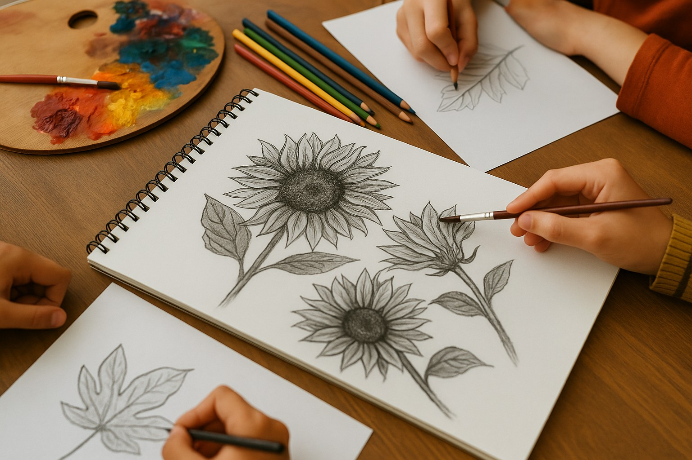
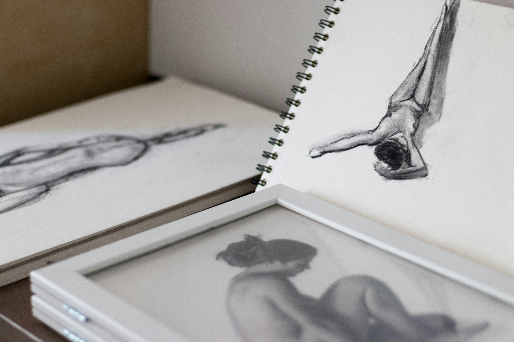

디지털 드로잉 전문가
Digital Drawing Specialist
디지털 드로잉 도구와 소프트웨어를 활용하여 일러스트, 캐릭터, 제품 디자인 등 다양한 시각 콘텐츠를 제작하고, 디지털 콘텐츠 산업 전반에서 활용 가능한 창의적 시각 표현을 수행하는 직무를 수행합니다.
* 자격등록번호: 제 2025-003614호
* 주무부처: 문화체육관광부

국제 수채화 전문가
International Watercolor Specialist
수채화 재료와 기법을 바탕으로 투명감과 색채 조화를 활용한 창의적인 회화 작업을 수행하며, 교육·창작·전시 분야에서 예술적 감수성과 기술을 겸비한 수채화 작품을 제작하는 직무를 수행합니다.
* 자격등록심사중(주무부처: 문화체육관광부)

아동 미술 지도사
Children's Art Instructor
아동의 인지·정서·창의 발달 단계를 이해하고, 다양한 미술 재료와 표현 기법을 활용하여 아동이 자유롭고 즐겁게 표현활동할 수 있도록 지도하며, 아동의 개성과 흥미를 고려한 맞춤형 미술 수업을 설계·운영하는 직무를 수행합니다.
* 자격등록번호: 제 2025-003855호
* 주무부처: 문화체육관광부

도자기 공예 전문가
Ceramic Art Specialist
흙의 물성과 조형 원리를 바탕으로 성형·조각·채색·유약 처리 등 도자기 제작 과정을 수행하고, 기능성과 예술성을 겸비한 도자 작품을 제작하며, 전통과 현대 기법을 응용한 창작 활동과 도자기 공예 교육을 기획·운영하는 직무를 수행합니다.
* 자격등록번호: 제 2025-003854호
* 주무부처: 문화체육관광부

세라믹 페인팅 전문가
Ceramic Painting Specialist
도자기 등 세라믹 소재에 다양한 회화적 기법을 적용하여 색감·패턴·질감 등을 창의적으로 표현하고, 실용성과 심미성을 동시에 만족시키는 세라믹 아트를 제작하며, 이를 교육과 전시에 연계하는 직무를 수행합니다.
* 자격등록심사중(주무부처: 문화체육관광부)

아트 드로잉 전문가
Art Drawing Specialist
연필·목탄·펜 등 다양한 전통 드로잉 도구를 활용하여 자유로운 선 표현과 명암·구도·질감 등을 통해 예술성과 조형성을 갖춘 드로잉 작업을 수행하며, 창작 및 교육 분야에서 활용 가능한 시각 표현 능력을 발휘합니다.
* 자격등록심사중(주무부처: 문화체육관광부)